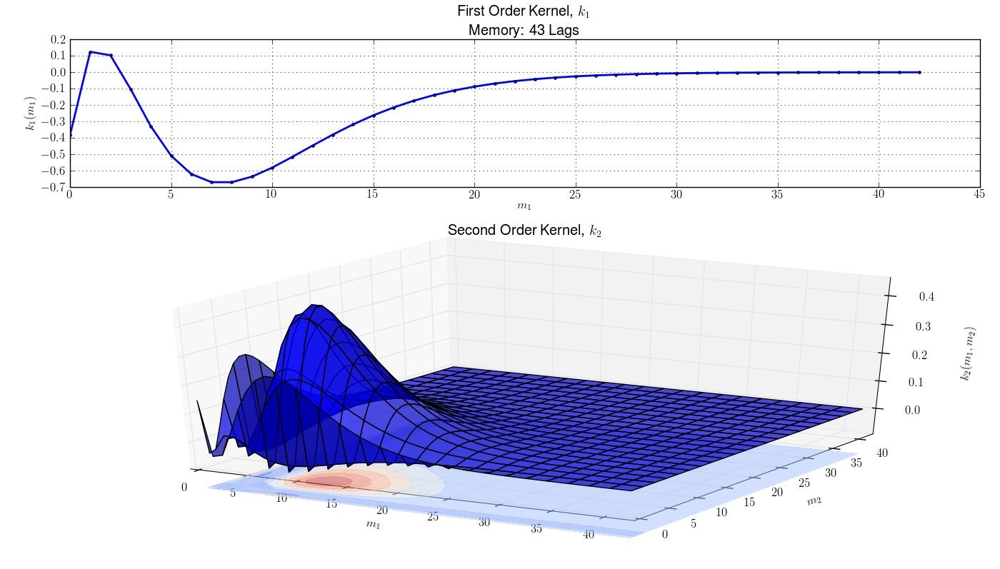
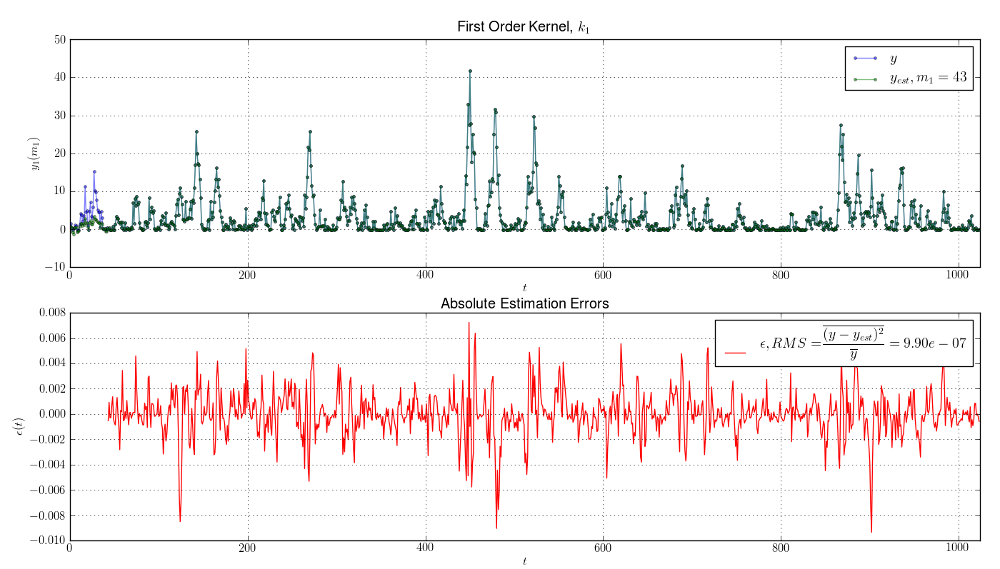

Getting Started¶
Nonlinear System Modeling with Volterra-Laguerre Series¶
Build and Evaluate SISO Volterra-Laguerre Model from Input/Output Data¶
- Generate Data and initialize the model.
The module comes with data generation functions to build and test models
>>> from Non_Linear_Dynamics.models.non_parametric.volterra_series import VolterraLaguerre >>> from Non_Linear_Dynamics.data.generate import SISO_with_Laguerres # IO data generating function >>> X, Y = SISO_with_Laguerres(num_points=1024, num_laguerres=3, memory=40) >>> v1 = VolterraLaguerre(X, Y, num_laguerres=3, alpha=0.5)
Note
the ommited memory argument in the VolterraLaguerre call is calculated from the alpha argument. You can explicitly define it if you want.
\[int\left[\frac{-30-log(1-\alpha)}{log(\alpha)}\right]\]
- Estimate Kernels using Laguerre basis functions \(L\) and their coefficients \(c\)
- Kernel is the convolution of the Laguerre basis functions with their coeficients.
>>> v1.train(order=2, method='LS') # uses the num_laguerres=3 argument above. >>> v1.plot_kernals() # opens a new figure
- Estimate output using model
Using the exact input data
>>> y_est, errors, rms = v1.estimate_y() >>> v1.plot_output() # opens a new figure
Using the NEW input data:
>>> x_new, y_new = SISO_with_Laguerres(num_points=1024, num_laguerres=3, memory=40) >>> y_est, errors, rms = v1.estimate_y(x=x_new, y=y_new) >>> v1.plot_output() # opens a new figure
{kind=link}
{kind=link}
Build and Evaluate MISO Volterra-Laguerre Model from Input/Output Data¶
TODO
PDM Analysis of a SISO Volterra-Laguerre Model¶
TODO
PDM Analysis of a MISO Volterra-Laguerre Model¶
TODO